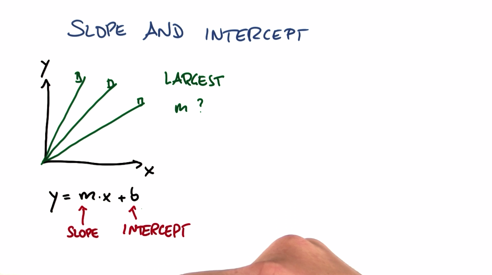

回归
Back to Home
01. 连续输出
02. 连续
03. 年龄：连续还是离散？
04. 天气：连续还是离散？
05. 电子邮件作者：连续还是离散？
06. 电话号码：连续还是离散？
07. 收入：连续还是离散？
08. 连续特征
09. 具有连续输出的监督学习
10. 回归线性方程
11. 斜率和截距
12. 斜率
13. 截距
14. 使用回归的预测
15. 添加截距
16. 移交给 Katie
17. 编码
18. sklearn 中的年龄/净值回归
19. 通过 sklearn 提取信息
20. 通过 sklearn 提取分数数据
21. 现在你练习提取信息
22. 线性回归误差
23. 误差
24. 误差和拟合质量
25. 最小化误差平方和
26. 最小化误差平方和的算法
27. 为何最小化 SSE
28. 最小化绝对误差的问题
29. 肉眼评估回归
30. SSE 的问题
31. 回归的 R 平方指标
32. SKlearn 中的 R 平方
33. 可视化回归
34. 什么数据适用于线性回归
35. 比较分类与回归
36. 多元回归
37. 多元回归 2
38. 回归迷你项目简介
39. 回归迷你项目
40. 奖金目标和特征
41. 可视化回归数据
42. 提取斜率和截距
43. 回归分数：训练数据
44. 回归分数：测试数据
45. 根据 LTI 回归奖金
46. 工资与预测奖金的 LTI
47. 异常值破坏回归
Back to Home
12. 斜率
斜率
Question:
Start Quiz:

Solution:
Next Concept